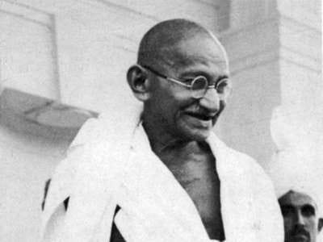
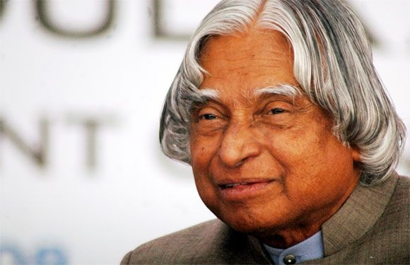
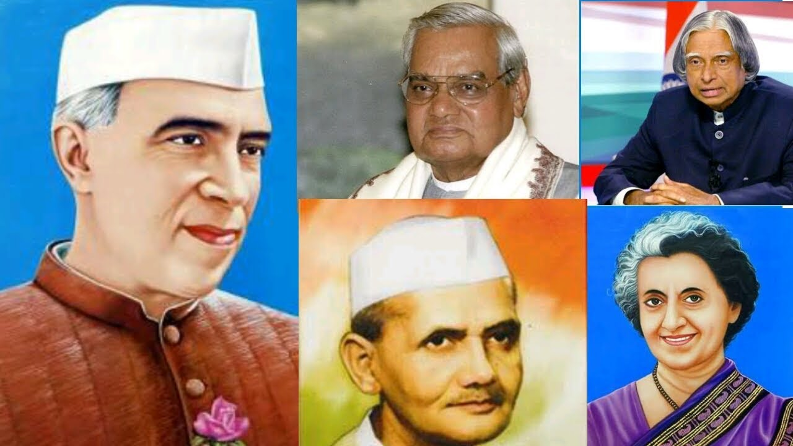
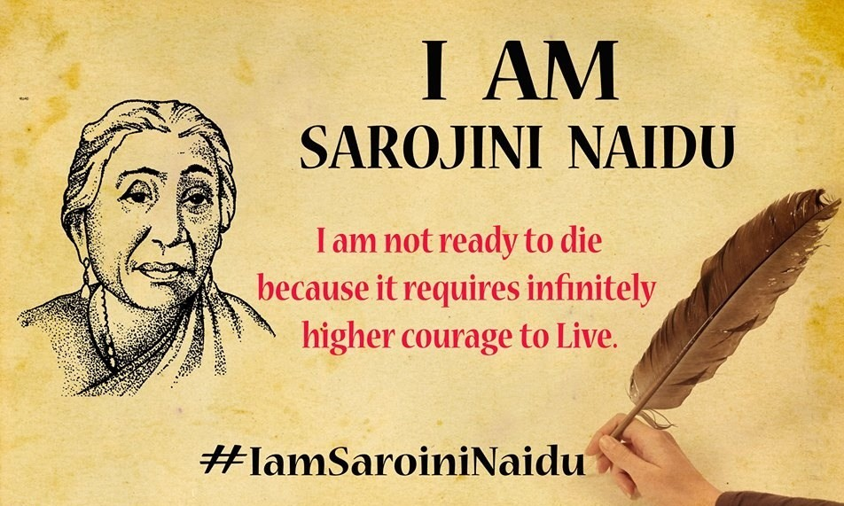
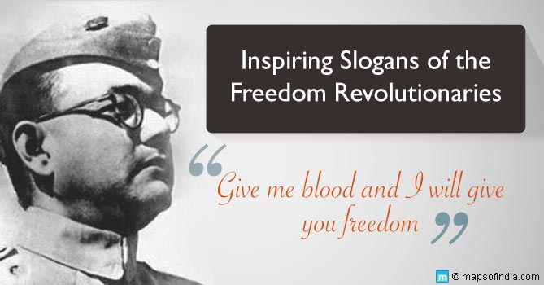
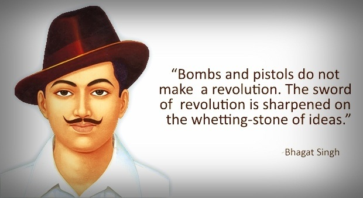

OUR RESPECTED LEADERS :-

The Greatest Indian
A poll sponsored by Reliance Mobile and conducted by Outlook magazine, in partnership with CNN-IBN and The History Channel. The poll was conducted from June to August 2012, with the winner,
B. R. Ambedkar, announced on 11 August. A program associated with the poll aired from 4 June until 15 August.
CONGRESS LEADERS :-

Unlike other editions of Greatest Britons spin-offs, The Greatest Indian did not include people from all time periods of history. Two reasons were given for this choice.
The first was that "the pre-independence history of India is dominated by Mahatma Gandhi and it is impossible for anyone to come close to the Father of the Nation when it
comes to Leadership, Impact and Contribution. [...] The panel of experts felt that if Gandhi were to be included in the list, there would be no competition for title of The

Greatest Indian".[2] Secondly, The Greatest Indian chose to focus on India as a modern nation: "India today is unrecognizable from the India that got independence in 1947.
This nation has achieved this stature in the world thanks to contribution from millions of Indians. This is an effort to recognise one who has made the maximum contribution
and impact in the surge of independent India"
list of 100 names was presented to and compiled by a 28-member jury composed of actors, writers, sportspersons, entrepreneurs, and men and women of distinction in their fields.
This jury included N. Ram (former Editor-In-Chief of The Hindu), Vinod Mehta (Editor-in-Chief of Outlook), Soli Sorabjee (Former Attorney General of India), Sharmila Tagore
(Bollywood actress and former Chairperson of the Censor Board of India), Harsha Bhogle (sports), Chetan Bhagat (author),Ramachandra Guha (historian), Shashi Tharoor
(politician and author), Nandan Nilekani, Rajkumar Hirani, Shabana Azmi and Arun Jaitley. They finalized a list of the top 50 nominees, which was released to the public on 4

June 2012, by CNN-IBN Editor-in-Chief Rajdeep Sardesai. A three-way process was then used to assess a top ten, in which equal weight was given to the votes of the jury, an online poll,
and a market survey conducted by the Nielsen Company. 7,129,050 people participated in this phase of the online poll.Public voting was conducted from 4 June to 25 June,with the
final top ten were announced on 3 July.A second round of voting followed, using the same method as the first, lasting from 1 July to 1 August. Individuals were able to cast votes either
by visiting www.thegreatestindian.in or by calling a unique number given to each of the nominees. Nearly 20,000,000 people voted in this round of the survey.
The announcement of the winner was made on 11 August,with a special finale